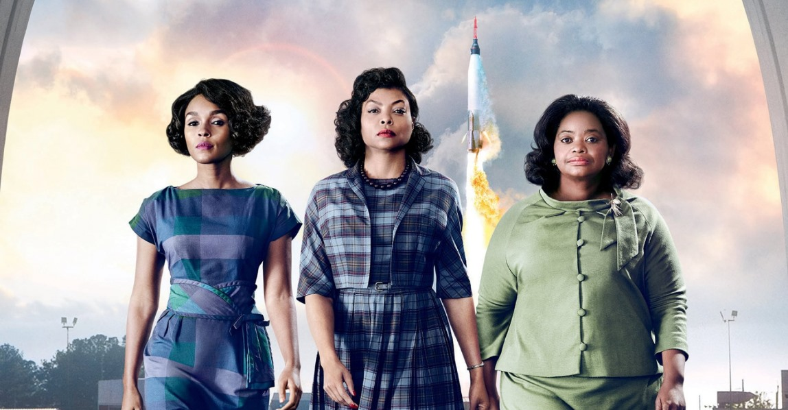

Estrelas Além do Tempo: Desvendando o Impacto Oculto de um Legado Ousado que Desafia a Discriminação Racial e a Desigualdade de Gênero!
Análise Profunda do Filme Revela as Lutas Heróicas de Mulheres Afro-Americanas na NASA, Expondo uma Realidade Alarmante de Preconceito Sistêmico e Desafios Intransigentes.
Por Kelly Alves, Repórter de Questões Sociais e Igualdade de Direitos
Data: 25/07/2023
"Estrelas Além do Tempo" emerge como uma narrativa arrebatadora que lança luz sobre um capítulo sombrio da história norte-americana, expondo as profundezas de preconceito sistêmico e desigualdade de gênero que permeavam as instituições mais prestigiadas do país. Uma análise cuidadosa do filme revela uma luta heróica, subestimada por décadas, de mulheres afro-americanas na NASA, que desafiaram as adversidades e redefiniram o curso da exploração espacial.
"Estrelas Além do Tempo" lança um olhar penetrante sobre as trajetórias extraordinárias de três matemáticas afro-americanas - Katherine Johnson, Dorothy Vaughan e Mary Jackson - que lutaram para conquistar seu lugar em uma NASA dominada por homens brancos durante a Guerra Fria. Os desafios enfrentados por essas mulheres, que foram relegadas às margens devido à cor de sua pele e gênero, exibem um retrato angustiante da América segregada.
O filme revela o paradoxo chocante: essas mulheres talentosas e dedicadas eram obrigadas a provar constantemente suas habilidades intelectuais, enfrentando barreiras que iam desde a exclusão de salas de reunião até a separação segregada de instalações. Mesmo diante das hostilidades e desdém, elas desafiaram a discriminação racial e de gênero com uma determinação implacável, contribuindo de maneira inestimável para o sucesso da NASA nas missões espaciais.
A narrativa ressoa como um alerta poderoso, lembrando-nos das profundezas do racismo institucionalizado e da desigualdade sistêmica que persistiam nos Estados Unidos até não muito tempo atrás. Ao mesmo tempo, "Estrelas Além do Tempo" também celebra o espírito humano resiliente, destacando as conquistas notáveis que essas mulheres alcançaram apesar das adversidades aparentemente intransponíveis.
O legado dessas mulheres corajosas ecoa na história e nos inspira a enfrentar os desafios contemporâneos de igualdade de direitos e oportunidades. "Estrelas Além do Tempo" serve como um convite para uma análise profunda da nossa sociedade atual, lembrando-nos que a luta pela igualdade ainda não está completa. As lições dessa história ainda ressoam com urgência, provocando ação e reflexão sobre as barreiras persistentes que devemos superar para construir um futuro mais justo e inclusivo.